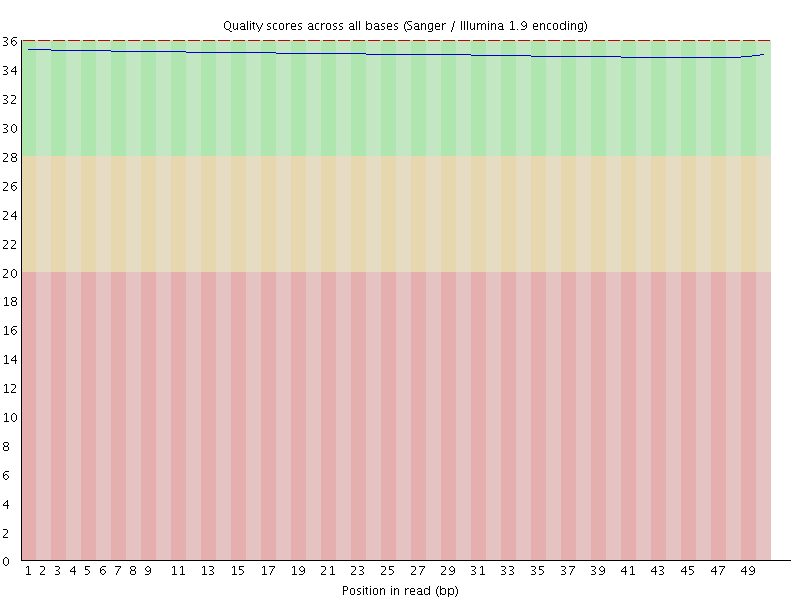
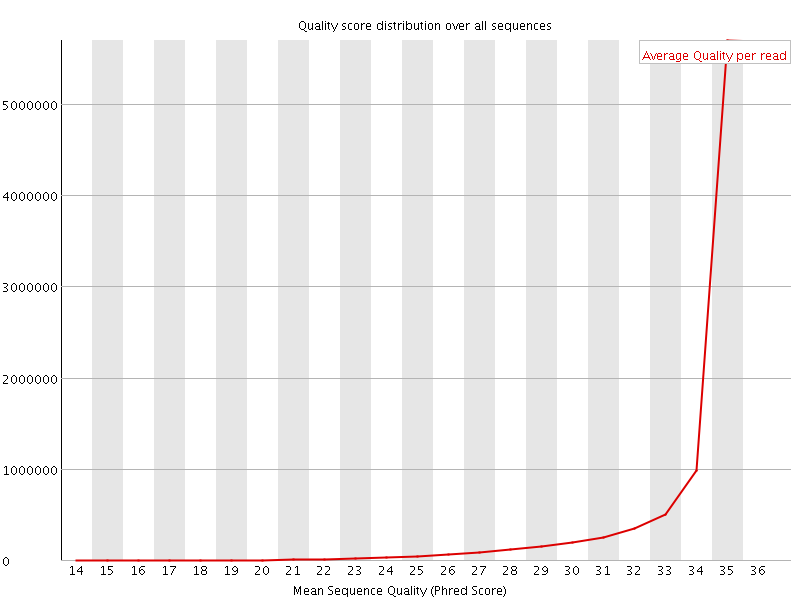
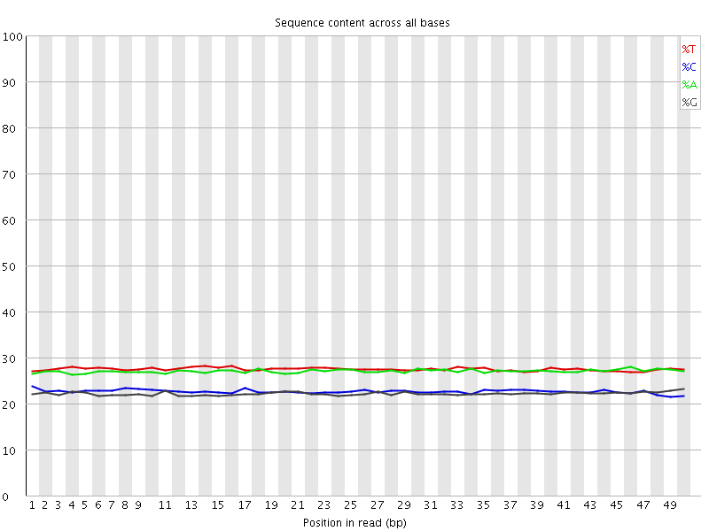
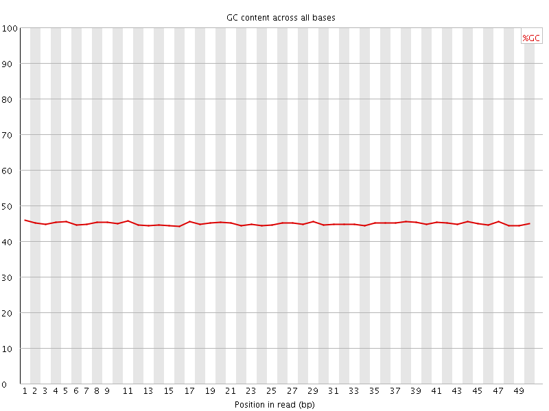
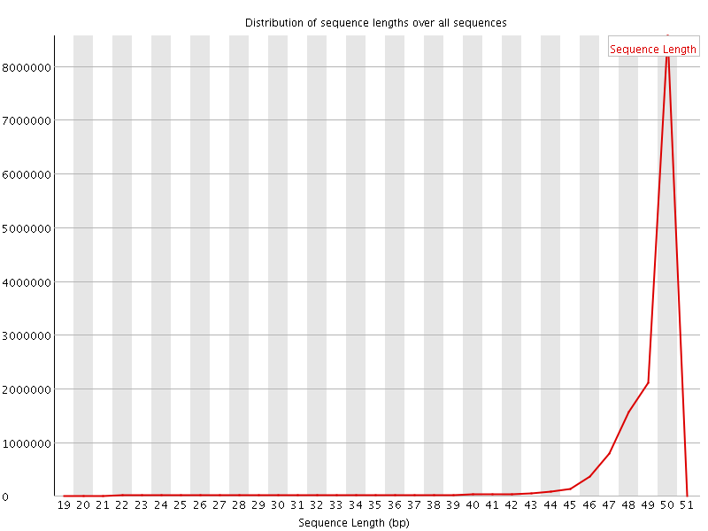
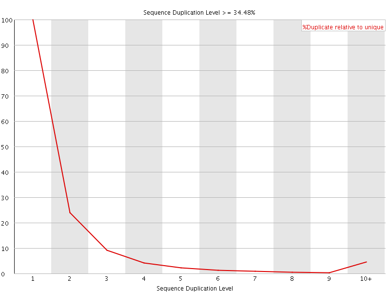
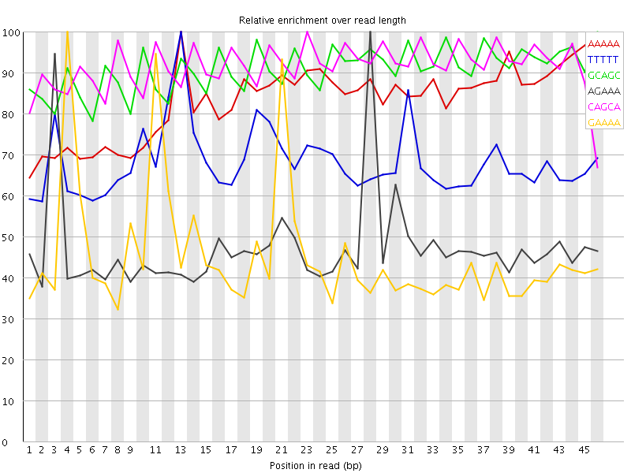

![[OK]](Icons/tick.png) Basic Statistics
Basic Statistics
| Measure | Value |
|---|---|
| Filename | 019-F0_S5_L001_R1_001_trimmed.fq.gz |
| File type | Conventional base calls |
| Encoding | Sanger / Illumina 1.9 |
| Total Sequences | 14274363 |
| Filtered Sequences | 0 |
| Sequence length | 20-50 |
| %GC | 45 |
Per base sequence quality

Per sequence quality scores

Per base sequence content

Per base GC content

![[WARN]](Icons/warning.png) Per sequence GC content
Per sequence GC content

Per base N content

Sequence Length Distribution

Sequence Duplication Levels

Overrepresented sequences
No overrepresented sequences
Kmer Content

| Sequence | Count | Obs/Exp Overall | Obs/Exp Max | Max Obs/Exp Position |
|---|---|---|---|---|
| AAAAA | 3408990 | 3.5824718 | 4.3047576 | 13 |
| TTTTT | 3681320 | 3.5748527 | 5.2346935 | 13 |
| GCAGC | 1356000 | 3.0260777 | 3.3313804 | 46 |
| AGAAA | 2350610 | 3.0145323 | 6.385597 | 28 |
| CAGCA | 1644275 | 3.0068552 | 3.2803707 | 23 |
| GAAAA | 2339095 | 2.999765 | 6.616359 | 4 |
| TTTTC | 2492895 | 2.93676 | 5.1156764 | 4 |
| GAGAA | 1477415 | 2.3121936 | 6.487009 | 27 |
| GGAAA | 1459080 | 2.283499 | 6.275351 | 20 |
| TGAAA | 1572615 | 1.9851866 | 5.2469087 | 10 |
| CTGAA | 1294735 | 1.9516822 | 5.806391 | 9 |
| AAATG | 1483690 | 1.8729321 | 5.310764 | 23 |
| CATTT | 1518560 | 1.8174266 | 5.3117905 | 1 |
| AAAAC | 1416155 | 1.7771218 | 5.014394 | 5 |
| TGAGA | 1072380 | 1.6519995 | 5.7015886 | 26 |
| ATGAG | 895425 | 1.3794006 | 5.4287214 | 25 |
| AACTG | 891875 | 1.3444115 | 5.0508437 | 7 |
| ACTGA | 871505 | 1.3137058 | 5.073341 | 8 |